Язы́к ассе́мблера (англ. assembly language) — машинно-ориентированный язык программирования низкого уровня. Представляет собой систему обозначений, используемую для представления в удобно читаемой форме программ, записанных в машинном коде. Его команды прямо соответствуют отдельным командам машины или их последовательностям. Является существенно платформо-зависимым: языки ассемблера для различных аппаратных платформ несовместимы, хотя могут быть в целом подобны.
")
Язык ассемблера позволяет программисту пользоваться алфавитными мнемоническими кодами операций, по своему усмотрению присваивать символические имена регистрам ЭВМ и памяти, а также задавать удобные для себя схемы адресации (например, индексную или косвенную). Кроме того, он позволяет использовать различные системы счисления (например, десятичную или шестнадцатеричную) для представления числовых констант и даёт возможность помечать строки программы метками с символическими именами с тем, чтобы к ним можно было обращаться (по именам, а не по адресам) из других частей программы (например, для передачи управления).
Также может предоставлять дополнительные возможности облегчения программирования, такие как макрокоманды, выражения, средства обеспечения модульности программ. В связи с этим может рассматриваться как автокод (см. ниже), расширенный конструкциями языков программирования высокого уровня
Перевод программы на языке ассемблера в исполнимый машинный код (вычисление выражений, раскрытие макрокоманд, замена мнемоник собственно машинными кодами и символьных адресов на абсолютные или относительные адреса) производится ассемблером — программой-транслятором, которая и дала языку ассемблера его название.
В разговорном русском языке может именоваться просто «ассемблером» (типичны выражения типа «писать программу на ассемблере»), что, строго говоря, неверно, так как ассемблером именуется утилита трансляции программы с языка ассемблера в машинный код процессора. Вместо фразы «программа на ассемблере» корректнее говорить «программа на языке ассемблера».
Использование термина «язык ассемблера» может вызвать ошибочное мнение о существовании некоего единого языка низкого уровня или хотя бы стандарта на такой язык. Поскольку синтаксис программы на языке ассемблера зависит главным образом от используемой архитектуры, единого языка ассемблера не существует. При использовании термина «язык ассемблера», если не очевидно из контекста, желательно уточнять, ассемблер для какой архитектуры имеется в виду.
Синтаксис языка
Синтаксис программы на языке ассемблера определяется главным образом системой команд конкретного процессора и системой директив конкретного транслятора.
Для некоторых платформ может существовать несколько видов синтаксиса языка ассемблера, не совместимых между собой. Например, наиболее популярные синтаксисы языков ассемблера для Intel-совместимых процессоров — Intel-синтаксис и AT&T-синтаксис.
Метки
Язык ассемблера позволяет использовать символические метки вместо адресов ячеек памяти, которые при ассемблировании заменяются на вычисляемые ассемблером или компоновщиком абсолютные или относительные адреса.
В большинстве случаев имя метки в тексте программы записывают, начиная с первой позиции текстовой строки, и отделяют от остального текста двоеточием:
Label1:
На объявленную затем метку может быть выполнен переход из другого места программы, расположенного как выше, так и ниже по тексту.
Запись числовых констант
Трансляторы с языка ассемблера позволяют использовать числовые константы в различных системах счисления, поэтому для каждой используемой в тексте программы числовой константы должно быть указано, в какой системе счисления она записана. Способы указания систем счисления зависят от конкретного транслятора и могут существенно отличаться от одного транслятора к другому. Например:
Соответственно, запись числа без явного указания системы счисления разными трансляторами будет воспринята по-разному. Например, 057 в зависимости от транслятора может быть прочитано как восьмеричная запись числа 47, десятичная запись числа 57 или шестнадцатеричная запись числа 87. В некоторых трансляторах система счисления, используемая по умолчанию, может быть определена с помощью директив.
Инструкции процессора
Команды языка ассемблера один к одному соответствуют командам процессора. Фактически, они и представляют собой более удобную для человека символьную форму записи — мнемокоды — команд и их аргументов. При этом одной команде языка ассемблера может соответствовать несколько вариантов команд процессора
Каждая модель (или семейство) процессоров имеет свой набор команд (систему команд) и соответствующий ей язык ассемблера. Используемые мнемоники обычно одинаковы для всех процессоров одной архитектуры или семейства архитектур (среди широко известных — мнемоники процессоров и контроллеров x86, ARM, PIC, SPARC, PowerPC, M68k и другие). Возможные исключения из этого правила:
Типичными командами языка ассемблера являются (большинство примеров даны для Intel-синтаксиса архитектуры x86):
- cjne — перейти, если не равно
- djnz — декрементировать, и если результат ненулевой, то перейти
- cfsneq — сравнить, и если не равно, пропустить следующую команду
Наборы мнемоник конкретных процессоров описаны в спецификациях этих процессоров, часто известных как «Datasheet».
Типичный формат записи команд:
[метка:] [ [префикс] мнемокод [операнд {, операнд}] ] [;комментарий]
В указанном формате строки:
Пример кодирования инструкций на языке ассемблера для архитектуры PIC16:
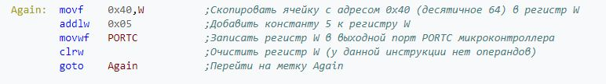
TASM
Turbo Assembler (TASM) — программный пакет компании Borland, предназначенный для разработки программ на языке ассемблера для архитектуры x86. Кроме того, TASM может работать совместно с трансляторами с языков высокого уровня фирмы Borland, такими как Turbo C и Turbo Pascal. Как и прочие программные пакеты серии Turbo, TASM больше не поддерживается.
Пакет TASM поставляется вместе с компоновщиком Turbo Linker и создаёт объектный .obj-файл, который компоновщик переводит в исполнимый файл. Полученные исполнимые файлы можно отлаживать с помощью Turbo Debugger.
По умолчанию TASM работает в режиме совместимости с другим распространённым ассемблером — Microsoft Macro Assembler, то есть TASM умеет транслировать исходники, разработанные под MASM. Кроме того, TASM имеет режим IDEAL, улучшающий синтаксис языка и расширяющий его функциональные возможности.
Последнее развитие компилятор получил благодаря современной среде разработки TASM Visual. С её помощью работа с компилятором многократно упрощается.
Пример программы для MS-DOS на TASM
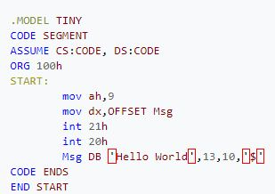
Пример программы для MS-DOS на TASM (тот же пример в режиме IDEAL)
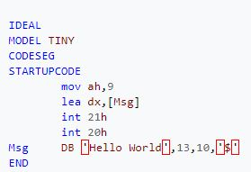
Еще пример программы для MS-DOS на TASM (с описанием)
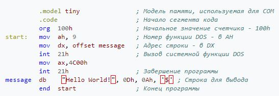
SASM
SASM (SimpleASM) — бесплатная простая кроссплатформенная Open Source среда разработки программного обеспечения на языках ассемблера NASM, MASM, GAS, FASM с подсветкой синтаксиса и отладчиком.
SASM позволяет легко разрабатывать и выполнять программы, написанные на языке ассемблера. Программа работает «из коробки» и хорошо подходит для начинающих изучать язык ассемблера.
Основана на Qt. Распространяется по свободной лицензии GNU GPL v3.0.
Создана программистом Дмитрием Манушиным (Dman95)
Возможности
NASM
NASM (Netwide Assembler) — свободный (LGPL и лицензия BSD) ассемблер для архитектуры Intel x86. Используется для написания 16-, 32- и 64-разрядных программ.
Синтаксис языка
В NASM используется Intel-синтаксис записи инструкций. Предложение языка ассемблера NASM (строка программы) может состоять из следующих элементов:
Метка Инструкция Операнды Комментарий
Операнды отделяются между собой запятой. Перед строкой и после инструкции можно использовать любое количество пробельных символов. Комментарий начинается с точки с запятой, а концом комментария считается конец строки. В качестве инструкции может использоваться команда или псевдокоманда (директива компилятора). Если строка очень длинная, то её можно перенести на следующую, используя обратный слеш \, подобно тому, как это делается в языке Си.
Компиляция и компоновка
NASM компилирует программы под различные операционные системы в пределах x86-совместимых процессоров. Находясь в одной операционной системе, можно беспрепятственно откомпилировать исполняемый файл для другой.
Компиляция программ в NASM состоит из двух этапов. Первый — ассемблирование, второй — компоновка. На этапе ассемблирования создаётся объектный код. В нём содержится машинный код программы и данные, в соответствии с исходным кодом, но идентификаторы (переменные, символы) пока не привязаны к адресам памяти. На этапе компоновки из одного или нескольких объектных модулей создаётся исполняемый файл (программа). Операция компоновки связывает идентификаторы, определённые в основной программе, с идентификаторами, определёнными в остальных модулях, после чего всем идентификаторам даются окончательные адреса памяти или обеспечивается их динамическое выделение.
Для компоновки объектных файлов в исполняемые в Windows можно использовать свободный бесплатно распространяемый компоновщик alink(для 64-битных программ компоновщик GoLink), а в Linux — компоновщик ld, который есть в любой версии этой операционной системы.
Для ассемблирования файла нужно ввести следующую команду:
nasm -f format filename -o output
Инструкции перехода
Компилятор обрабатывает текст программы в несколько проходов, благодаря чему можно инструкции перехода размещать до объявления соответствующих меток.
В командах условного и безусловного (jmp) переходов используется по умолчанию ближний тип переходов — near. Поэтому при возможности короткого перехода, чтобы не завысить размер программы на лишний байт, необходимо специально указать тип перехода short. С версии 0.98.09b были добавлены опции оптимизации -Ox, которые позволяют автоматически оптимизировать размер инструкций перехода, в более ранних версиях или без таких опций минимальный размер программы можно получить только ручной модификацией исходного кода.
Формат выходных файлов
NASM поддерживает множество форматов выходных файлов, среди них:
Формат выходного файла можно задать с помощью ключа командной строки -f. Форматы могут расширять синтаксис некоторых инструкций и добавлять собственные инструкции.
Примеры программы «Hello, world!» под разные ОС
Под операционную систему Linux
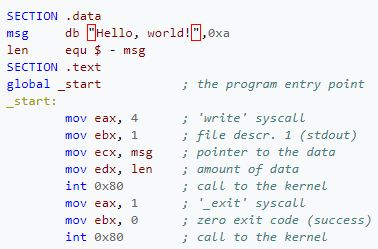
Под операционную систему Linux (x64)
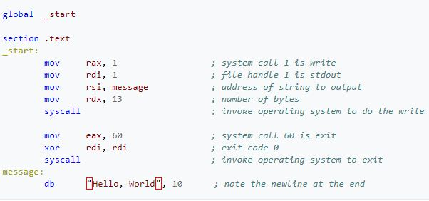
Под операционную систему DOS
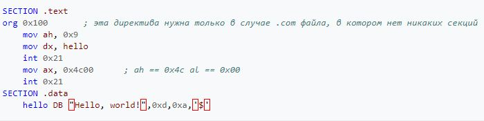
Под операционную систему Windows (obj)
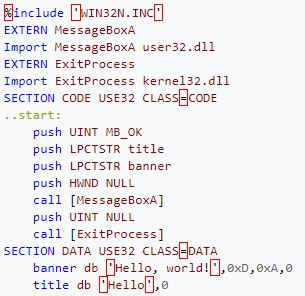
Под операционную систему Windows x64 (obj)
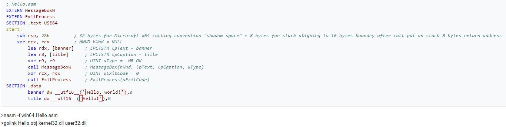
Под операционную систему FreeBSD
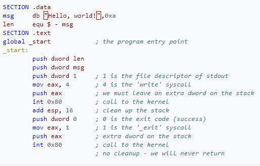
Под операционную систему KolibriOS
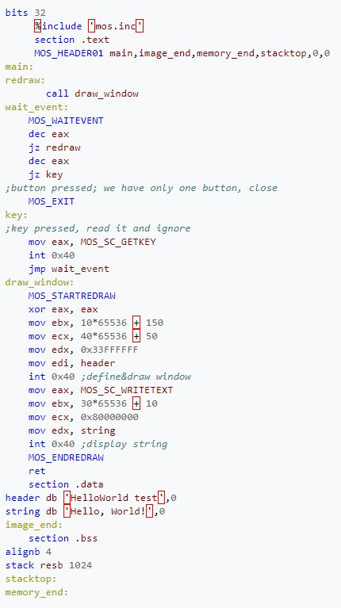
MASM
MASM (Microsoft Macro Assembler) — ассемблер для процессоров семейства x86. Первоначально был произведён компанией Microsoft для написания программ в операционной системе MS-DOS и был в течение некоторого времени самым популярным ассемблером, доступным для неё. MASM поддерживал широкое разнообразие макросредств и структурированность программных идиом, включая конструкции высокого уровня для повторов, вызовов процедур и чередований (поэтому MASM — ассемблер высокого уровня). Позднее была добавлена возможность написания программ для Windows. MASM — один из немногих инструментов разработки Microsoft, для которых не было отдельных 16- и 32-битных версий.
Программа Hello World на MASM32, которая выводит это сообщение и завершается.
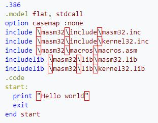
Пример той же программы на языке MASM версии 4.0 для процессора Intel 8086.
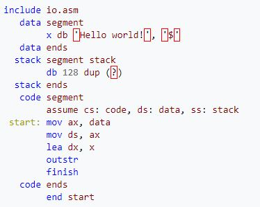
Пример той же программы для MS-DOS на языке MASM версии 6.1 для процессора Intel 8086.
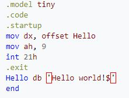
Версии MASM
Хотя MASM больше не является коммерческим продуктом, Microsoft продолжает поддерживать исходный код, используемый и в других продуктах Microsoft. С тех пор как Microsoft прекратила продавать MASM отдельно, было выпущено несколько обновлений к производственной линии MASM 6.x (последнее обновление — версия 6.15, которая была включена в Visual C++ 6.0), а после этого — MASM 7.0 в составе Visual C++ .NET 2002, MASM 7.1 в составе Visual C++ .NET 2003, MASM 8.0 в составе Visual C++ 2005 и MASM 9.0 в составе Visual C++ 2008, поддерживающие платформу x64. С версии 11 MASM снова выходит как независимый продукт, имеется 2 среды разработки обычный (qedit) и для юникода (uniedit).